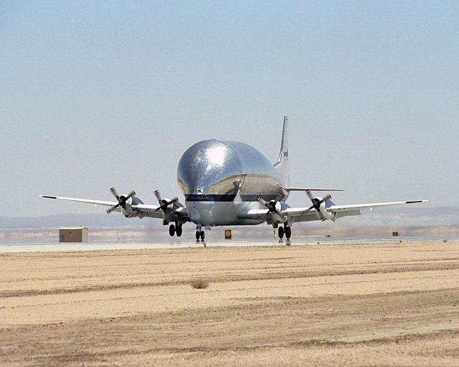

Ever since the dawn of heavier-than-air flight, inventors have tried to design new kinds of aircraft in order to achieve improved performance, introduce new capabilities, or just do something different. In this series we describe some of the stranger aircraft that have actually flown.
This month we celebrate the B-377PG "Pregnant" or "Super" Guppy, a successful transporter aircraft which first flew in 1962. Super Guppies are used to transport massive payloads such as missile and rocket stages. To provide access to the huge hold above the aircraft's body the entire cockpit section swings open like a door!
